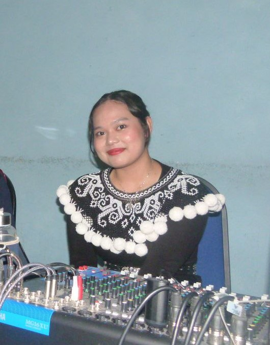

Accomplishments

BAFIN Committee's Member
(Protocol Committee, BAFIN Club, UiTM SAMARAHAN)
January 2024 – Present- Orchestrated event logistics to ensure protocol adherence.
- Managed VIP guest relations and event scheduling.
- Coordinated speaker itineraries and requirements.
- Led volunteer team for event protocol duties.
- Enforced event code of conduct for inclusivity.

SABERKAS's Member
(Sarawak United National Youth Organisation, Cawangan Baleh)
March 2023 - Present- Organized sport-related events and tournaments.
- Maintained equipment and ensured safety standards.
- Managed team practices and coaching schedules.
- Fundraised for the club and managed the budget.
- Liaised with other clubs and sports organizations.

D’BES Committee's Member
(Sport Committee, D’BES Club, UiTM MUKAH)
October 2021 - October 2022- Organized sport-related events and tournaments.
- Maintained equipment and ensured safety standards.
- Managed team practices and coaching schedules.
- Fundraised for the club and managed the budget.
- Liaised with other clubs and sports organizations.

Other Accomplishments
- Project leader for Dean List’s Appreciation Night, Faculty of Business and Management, UiTM, Mukah
- Participant of the Online Inbound Outbound International Mobility Programme with Universitas Jambi Indonesia
- Participant of ‘Modul Kepimpinan Survival Bangsa (MKSB), UiTM Mukah
- Assistant project leader for Financial Literacy under BAFIN, UiTM Samarahan
- Diploma in Business Studies: Dean's List Recipient for Semester 3 and 5, indicating a GPA of 3.83 and 3.56
- BBA Finance: Dean's List Recipient for Semester 2, indicating a GPA of 3.72